| Ýlginç,
garip veya absürd buluþlara ait aþaðýdaki çizimler ABD'nde tescil
edilmiþ gerçek patentlere aittir.
Bazý patent numaralarý buluþ sahibini rencide etmemek için deðiþtirilerek
yayýnlanmaktadýr.
(Kaynak: www.totallyabsurd.com)
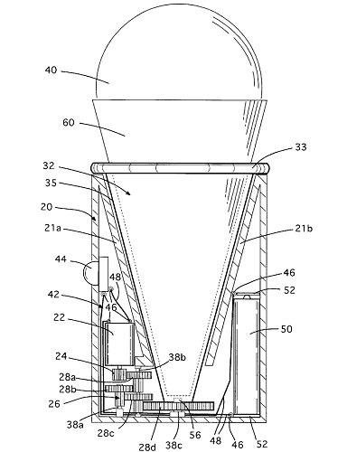
(Büyük resim için týklayýnýz)
Motorlu (pilli) dondurma külahý döndürme makinesi
Motorized ice cream cone, 1999, US Patent No: 5,971,829
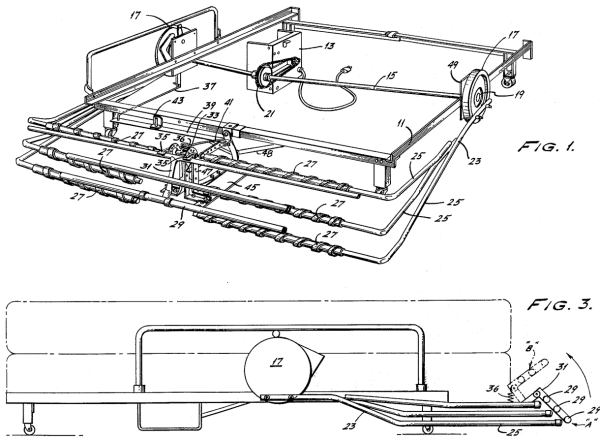
(Büyük resim için týklayýnýz)
Otomatik yatak yapma makinesi
Automatic Bed Maker, 1984, US Patent No: 4,441,222
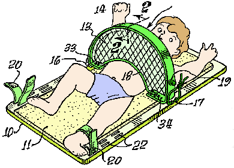
Yerinde duramayan hiperaktif bebekler için bebek bezi deðiþtirme aparatý!.. :)
Junior Jail
US Patent Issued In 1980
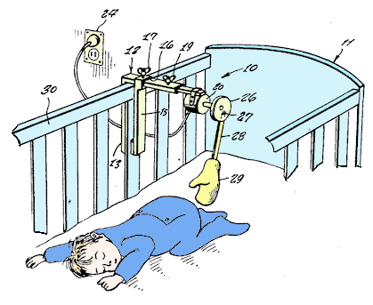
Motorlu bebek pýþpýþlayýcý!.. :)
Baby Patter
US Patent Issued In 1971
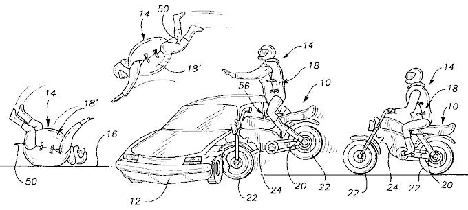
Motorsiklet sürücüleri için hava yastýklý yelek
Flying Turtle
US Patent Issued In 2000
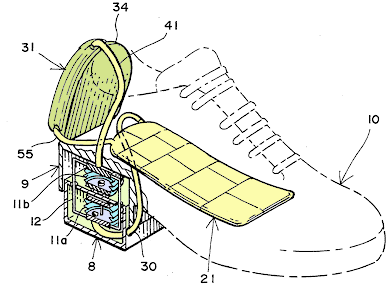
Soðutuculu ayakkabý
(kompresörü topuða baðlý bir ýsý pompasý ile yürüme sýrasýnda ayakkabý içinde soðutma saðlanýr)
Cool Shoes
US Patent Issued In 1994
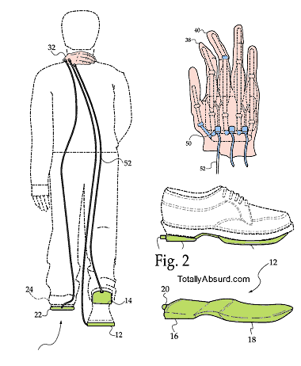
Yürüken enseye masaj yapan, robot eli
Cyborg Massage
US Patent Issued In 2002
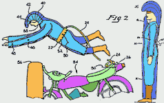Motorsiklet
sürücüleri için kazalarda vücudun
birçok bölgesini koruyan hava yastýðý:
Motorcycle Airbag, US Patent 4,825,469 / Issued 1989 |
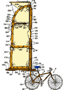Yelkenli
Bisiklet:
Windy Wheels,
US Patent 4,735,429 /
Issued 1988 |
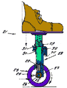Yaylý
ve tahrikli ayakkabý: Yukarý aþaðý salýným ile tekerleðe
ileri doðru dönme tahriði saðlanýr:
Pogo Shoes, US Patent 3,977,094 / Issued 1976 |
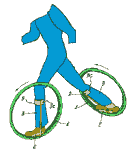Ayak
çemberleri: Küçük
çaplý paten tekerleklerinin yoldaki
pürüzlerden kolay etkilenme problemini çözmek için büyük
çaplý bisiklet tekerinin ayaða adapte edilmiþ hali:
Foot Hoops, US Patent 4,363,493 / Issued 1982 |
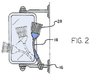Bu
rüzgarla çalýþan ototmobil ayna temizleyicisi otomobilin
hareketi sýrasýnda oluþan rüzgarla yaptýðý salýným sýrasýnda
aynayý temizler!:
Windy Widget, US Patent 5,802,060 / Issued 1998 |
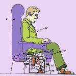Hava
korsanýna karþý bayýltýcý iðne: Bu iðnenin emniyet
önlemi olarak uçaktaki her koltuðun altýna konulmasý öngörülüyor...
Hijacker Injector, US Patent 3,481,328 / Issued 1974 |
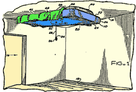Ýçi
helyum dolu bu uçan yatak kullanýlmadýðý vakit
tavanda durarak yer kaplamýyor:
Floating Furniture, USA patent 4,888,836 / Issued 1989 |
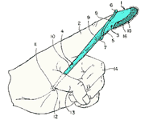Parmak
ucu diþ fýrçasý ile fýrçalama sýrasýnda diþlerinizi
hissedebilmeniz hedeflenmiþ:
Fingertip Toothbrush, 5,875,513 / Issued 1999 |
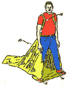Bu
çöp temizleme giyisisi ile sadece ayaklarýnýzý
açýp yürüyerek bahçenizdeki kuru yapraklarý temizleyebilirsiniz:
Super Trash Man, US Patent 4,943,276 / Issued 1989 |
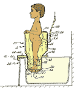Küvete
takýlabilen bu bebek
duþu bebekleri elden kaçýrmadan kontrollü bir þekilde
yýkayabilmenize olanak veriyor:
Baby Shower, US Patent 5,647,131 / Issued 1991 |
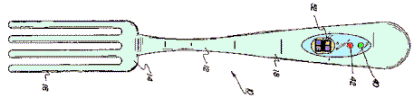Hýzlý
yemek yiyerek þiþmanlamayý önlemek için tasarlanmýþ bu
alarmlý çatal üzerinde periyodik olarak kýrmýzý
ve yeþil ýþýklar yanýyor; (sadece yeþil ýþýk yanarken
yemek yemelisiniz):
Alarm Fork, US Patent 5,421,089 Issued / 1995 |
Kötü tasarým örnekleri
Aþaðýdaki
sitede ise, kullanýcý ihtiyaçlarý yeterince göz önüne alýnmadan
yapýlan kötü tasarým örnekleri ve tasarýmý daha kullanýþlý
hale getirmek için yapýlan tavsiyeler bulunmaktadýr;
www.baddesigns.com
> Bad Human Factors Designs;
Scrapbook of illustrated examples of things that are hard to
use because they do not follow human factors principles.
Not:
01-08-2006 tarihinde TurkCADCAM Grubu'na gönderdiði bir mesajla
bu orijinal ve faydalý siteden bizi haberdar eden Elif Baktýr'a
teþekkür ederiz. |